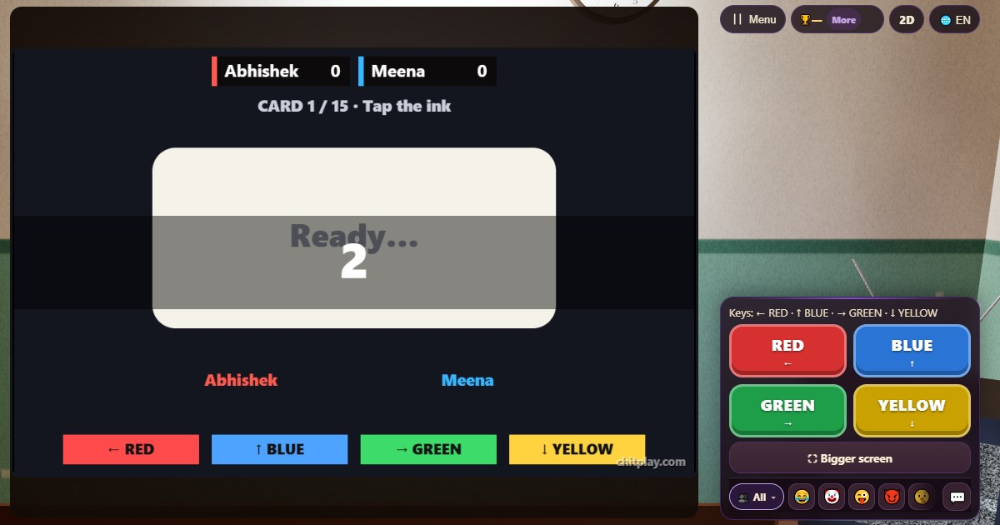

Stroop Test: play free online and learn the rules
▶ Play Stroop Test now🌍 Play online👫 Play with friends
- 👥 1–4 players
- ⏱ 1–2 minutes
- 👤 guest play
- 🌍 online opponents
- 🤖 computer players
- 👫 play with friends
- 🆓 free, no sign-up
The Stroop test is a famous brain teaser: the word says RED but it is printed in blue ink, and you have to answer with the ink, not the word. Your brain reads the word automatically, so it takes real focus to answer right and fast. ChitPlay turns it into a fifteen-card race you can play alone or against friends, with every answer timed on the player's own phone.

Ways to play Stroop Test
- 👤 Guest play Start straight away, no account and no sign-up. Your best score is kept on your device.
- 🌍 Play online Get matched with real players from around the world. If nobody is free within a few seconds, computer players take the empty seats so you are never left waiting.
- 👫 Play with friends Open a room, and friends join from their own phones with a 6-digit code or by scanning a QR code. Works on the same Wi-Fi or across the internet.
- 🎮 Two on one screen Sit side by side: one player on W A S D, the other on the arrow keys, or a gamepad each.
- 👀 Watch Let the computer players show you how the game goes before you jump in.
How to play
- A colour word appears on a card, printed in a coloured ink. Tap the button of the INK colour (or press the arrow key shown on it).
- From card 6, some cards say "Tap the WORD" instead: then answer with what the word says.
- Only your first tap on each card counts, so be sure before you tap. Cards 11 to 15 give you less time.
- Your time is measured on your own phone from the moment the card appeared there, so playing far-away friends online is fair.
Scoring
A right answer scores more the faster it is: 2000 minus your time in milliseconds, divided by ten, never less than 10. A wrong answer or no answer scores 0. With friends, the quickest right answer on each card gets 20 more. Medals at 600, 1200, 1700 and 2100 points.
Who wins
After fifteen cards, the most points wins. Alone, beat your own best and earn the medals.
Tips
- Look at the colour of the letters as a whole shape, and try not to read the word.
- Keep your thumbs near the buttons so you never have to look down.
- Read the line above the word on every card from card 6: ink or word?
Questions
What is the Stroop test?
A classic test of attention from psychology: naming the ink colour of a colour word is slower when the word and the ink don't match, because reading happens automatically.
Does it train the brain?
It is a fun focus exercise. Playing improves your score at this game; it is not a medical test.
How do you play Stroop Test online with friends?
Open Stroop Test on ChitPlay and choose Play with Friends. One phone opens a room and gets a 6-digit code; your friends type the code or scan the QR code on their own phones and join. No sign-up is needed.
Can I play Stroop Test without downloading anything?
Yes. Stroop Test runs in the web browser on phones, tablets and computers. Open www.chitplay.com, pick Stroop Test and play as a guest.
How many players can play Stroop Test?
Stroop Test on ChitPlay is for 1 to 4 players. You can play alone, or with friends and family.
Is Stroop Test free to play?
Yes, Stroop Test is completely free on ChitPlay. There is no real money, betting or prizes, and points have no value outside the game.
Can I play Stroop Test against the computer?
Yes. You can play Stroop Test on your own and try to beat your best score, or race against computer players.
What is Stroop Test called in other languages?
- हिन्दी: स्ट्रूप टेस्टEnglish: Stroop Test
- Hinglish: Stroop TestEnglish: Stroop Test
- Español: Test de StroopEnglish: Stroop Test
- Português: Teste de StroopEnglish: Stroop Test
- Français: Test de StroopEnglish: Stroop Test
- Deutsch: Stroop-TestEnglish: Stroop Test
- Bahasa Indonesia: Tes StroopEnglish: Stroop Test
- Türkçe: Stroop TestiEnglish: Stroop Test
- Italiano: Test di StroopEnglish: Stroop Test
- 日本語: ストループテストEnglish: Stroop Test
- 한국어: 스트룹 테스트English: Stroop Test
- 中文: 斯特鲁普测试English: Stroop Test
- Русский: Тест СтрупаEnglish: Stroop Test
- اردو: اسٹروپ ٹیسٹEnglish: Stroop Test
- नेपाली: स्ट्रुप टेस्टEnglish: Stroop Test
- বাংলা: স্ট্রুপ টেস্টEnglish: Stroop Test
More games


Cops and Robbers (Raja Rani Chor Police) · All games
Points in this game have no value. ChitPlay involves no real money, betting or prizes.